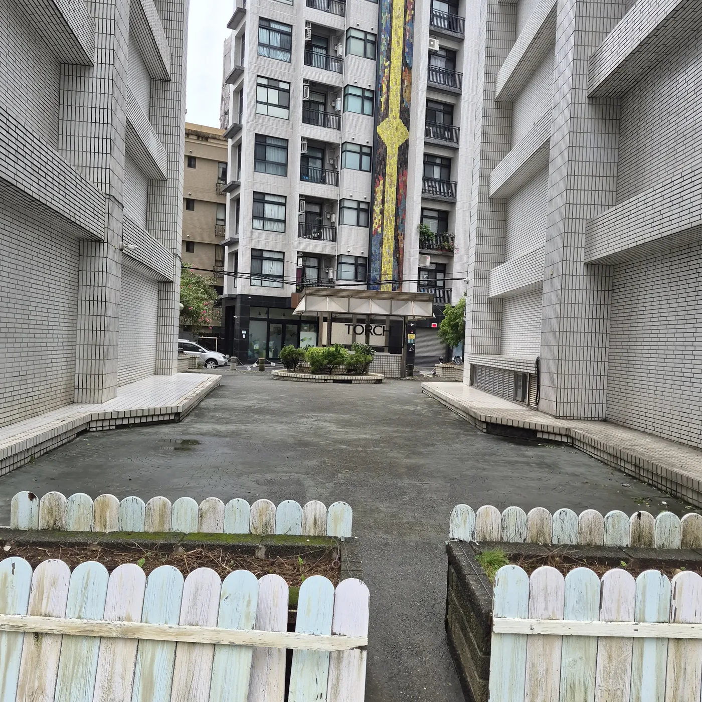

FIND YOUR WAY NOV 14, 2026
一起來，找我們吧
選好入口，跟著每張照片上的箭頭前進。
我們在火把教會副堂 B1 等你。
先用 Google 地圖到教會
地圖帶你到教會；入口請看下方照片。
CHOOSE YOUR ENTRANCE
你從哪個入口進來？

FOLLOW THE ARROW
庫倫街入口
01 / 06
STEP 01
從巷道入口往前
找到 7-ELEVEN 與路易莎之間的巷道，沿照片方向往前走。
直接跳到你看到的畫面
走到這裡就抵達火把教會副堂 B1 了。歡迎你來！♡
手機可在照片上左右滑動，切換前後步驟。